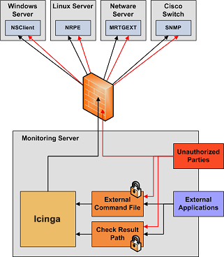
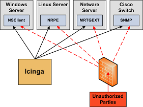
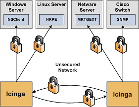

Dies ist als ein kurzer Überblick einiger Dinge gedacht, die Sie bei der Installation von Icinga im Hinterkopf behalten sollten, um es in einer sicheren Weise aufzusetzen.
Ihr Überwachungsrechner sollte als eine Hintertür in Ihre anderen System betrachtet werden. In vielen Fällen wird dem Icinga-Rechner der Zugriff auf Firewalls gewährt, um entfernte Server zu überwachen. In den meisten Fällen ist die Abfrage von verschiedenen Informationen der entfernten Server erlaubt. Überwachenden Servern wird ein gewisses Maß an Vertrauen entgegen gebracht, damit sie entfernte Systeme abfragen können. Das bietet einem potenziellen Angreifer eine attraktive Hintertür zu Ihren Systemen. Ein Angreifer könnte es einfacher haben, in Ihre Systeme einzudringen, wenn er zuerst den Überwachungsserver kompromittiert. Das trifft besonders dann zu, wenn Sie gemeinsame SSH-Schlüssel nutzen, um entfernte Systeme zu überwachen.
Wenn ein Eindringling in der Lage ist, Prüfergebnisse oder externe Befehle an den Icinga-Daemon zu erteilen, hat er die Möglichkeit, falsche Überwachungsdaten zu übertragen, Sie mit falschen Benachrichtigungen auf die Palme bringen oder Eventhandler-Scripte auszulösen. Wenn Sie Eventhandler-Scripte haben, die Services neu starten, Strom unterbrechen usw., dann kann das ziemlich problematisch sein.
Ein weiterer zu beachtender Bereich ist die Möglichkeit von Eindringlingen, Überwachungsdaten (Statusinformationen) zu belauschen, während sie über den Draht gehen. Wenn Übertragungskanäle nicht verschlüsselt sind, können Angreifer durch Beobachtung Ihrer Überwachungsdaten wertvolle Informationen gewinnen. Nehmen Sie als Beispiel die folgende Situation: ein Angreifer belauscht für eine gewisse Zeit die Überwachungsdaten und analysiert die typische CPU- und Plattenauslastung Ihrer Systeme zusammen mit der Zahl der Benutzer, die typischerweise angemeldet sind. Der Angreifer ist dann in der Lage, die beste Zeit für die Kompromittierung eines Systems und dessen Ressourcen (CPU usw.) zu ermitteln, ohne bemerkt zu werden.
Hier sind einige Hinweise, wie Sie Ihre Systeme sichern können, wenn Sie eine Icinga-basierte Überwachungslösung implementieren...
Benutzen Sie eine eigene Überwachungs-Box. Wir würden empfehlen, dass Sie einen Server benutzen, der nur für die Überwachung (und ggf. andere administrative Aufgaben) vorgesehen ist. Schützen Sie Ihren Überwachungsserver, als wäre es einer der wichtigsten Server Ihres Netzwerks. Halten Sie die laufenden Services auf einem Minimum und beschränken Sie den Zugang durch TCP-Wrapper, Firewalls usw. Weil der Icinga-Rechner berechtigt ist, mit Ihren Servern zu reden und vielleicht durch Ihre Firewalls zu gehen, kann es ein Sicherheitsrisiko sein, wenn Sie Benutzern Zugang zu Ihrem Überwachungsserver gewähren. Bedenken Sie, dass es einfacher ist, root-Zugang über eine Sicherheitslücke zu bekommen, wenn Sie ein lokales Benutzerkonto auf dem System haben.

Lassen Sie Icinga nicht als root laufen . Icinga muss nicht als root laufen, also tun Sie es nicht. Sie können Icinga anweisen, die Berechtigungen nach dem Start zu "droppen" und mit Hilfe der icinga_user- und icinga_group-Direktiven in der Hauptkonfigurationsdatei unter anderen Benutzer- und/oder Gruppenberechtigungen zu laufen. Wenn Sie Eventhandler oder Plugins ausführen müssen, die Root-Berechtigungen benötigen, möchten Sie vielleicht sudo nutzen.
Verriegeln Sie das Prüfergebnis-Verzeichnis. Stellen Sie sicher, dass nur der icinga-Benutzer im check result path lesen und schreiben darf. Wenn andere Benutzer außer icinga (oder root) in diesem Verzeichnis schreiben dürfen, dann können sie falsche Host-/Service-Prüfergebnisse an den Icinga-Daemon senden. Dies kann zu Ärger (falschen Benachrichtigungen) oder Sicherheitsproblemen (ausgelösten Eventhandlern) führen.
Verriegeln Sie das External Command File. Wenn Sie externe Befehle aktivieren, dann stellen Sie sicher, dass Sie passende Berechtigungen für das /usr/local/icinga/var/rw-Verzeichnis setzen. Nur der Icinga-Benutzer (normalerweise icinga) und der Web-Server-Benutzer (normalerweise nobody, httpd, apache2 oder www-data) sollten Schreibberechtigung für das Commmand-File besitzen. Wenn Sie Icinga auf einer Maschine installiert haben, die der Überwachung und administrativen Aufgaben dient, dann sollte das ausreichen. Wenn Sie es auf einer allgemeinen- oder Multi-User-Maschine installiert haben (nicht empfohlen) und dem Web-Server-Benutzer Schreibberechtigung auf das Command-File geben, kann das ein Sicherheitsproblem sein. Sie wollen schließlich nicht, dass jeder Benutzer auf Ihrem System Icinga über das External-Command-File kontrollieren kann. In diesem Fall würden wir raten, nur dem nagios-Benutzer Schreibberechtigung zu erlauben und etwas wie CGIWrap zu benutzen, um die CGIs als icinga statt als nobody laufen zu lassen.
Fordern Sie Authentifizierung bei den CGIs. Wir empfehlen dringend Authentifizierung für den Zugriff auf die CGIs. Sobald Sie das tun, lesen Sie die Dokumentation zu Standardberechtigungen von authentifizierten Kontakten und autorisieren Sie bestimmte Kontakte für zusätzliche Rechte nur, wenn es nötig ist. Eine Anleitung zur Einrichtung von Authentifizierung und Autorisierung finden Sie hier. Wenn Sie mit der use_authentication-Direktive die Authentifizierung in der CGI-Konfigurationsdatei deaktivieren, wird das command CGI das Schreiben jeglicher Befehle in das external command file verweigern. Sie wollen schließlich nicht, dass alle Welt in der Lage ist, Icinga zu kontrollieren, oder?
Benutzen Sie absolute Pfade in Befehlsdefinitionen. Wenn Sie Befehle definieren, benutzen Sie den absoluten Pfad (keinen relativen) für Scripte oder Programm, die Sie ausführen.
Verstecken Sie sensible Daten mit $USERn$-Makros. Die CGIs lesen die Hauptkonfigurationsdatei und die Objekt-Konfigurationsdatei(en), so dass Sie dort keine sensiblen Informationen (Benutzernamen, Passwörter, usw.) ablegen sollten. Wenn Sie Benutzernamen und/oder Passwörter in einer Befehlsdefinition angeben müssen, dann nutzen Sie ein $USERn$-Makro, um sie zu verstecken. $USERn$-Makros werden in einer oder mehreren Ressourcen-Dateien definiert. Die CGIs werden nicht versuchen, den Inhalt von Ressourcen-Dateien zu lesen, so dass Sie restriktivere Berechtigungen (600 oder 660) dafür benutzen können. Betrachten Sie die Beispiel-resource.cfg-Datei im Basisverzeichnis der Icinga-Distribution für ein Beispiel, wie $USERn$-Makros zu definieren sind.
Entfernen Sie gefährliche Zeichen aus Makros. Benutzen Sie die illegal_macro_output_chars-Direktive, um gefährliche Zeichen aus den $HOSTOUTPUT$- , $SERVICEOUTPUT$-, $HOSTPERFDATA$- und $SERVICEPERFDATA$-Makros zu entfernen, bevor sie in Benachrichtigungen usw. benutzt werden. Gefährliche Zeichen kann alles sein, was ggf. durch die Shell interpretiert wird und dadurch eine Sicherheitslücke öffnet. Ein Beispiel dafür sind Backtick-Zeichen (`) in den $HOSTOUTPUT$, $SERVICEOUTPUT$, $HOSTPERFDATA$ und /oder $SERVICEPERFDATA$-Makros, die es einem Angreifer erlauben, einen beliebigen Befehl als Icinga-Benutzer auszuführen (ein guter Grund, Icinga NICHT als root-Benutzer laufen zu lassen).
Sicherer Zugang zu entfernten Agenten. Verriegeln Sie den Zugang zu Agenten (NRPE, NSClient, SNMP, usw.) auf entfernten Systemen durch Firewalls, Zugangsliste usw. Sie wollen nicht, dass jeder Ihre Systeme nach Statusinformationen abfragt. Diese Informationen können durch einen Angreifer genutzt werden, um entfernte Eventhandler-Scripte auszuführen oder die beste Zeit zu ermitteln, um nicht beobachtet zu werden.

Sichere Kommunikationskanäle. Stellen Sie sicher, dass Sie die Kommunikationskanäle zwischen verschiedenen Icinga-Installationen und Ihren Überwachungskanälen verschlüsseln, wann immer möglich. Sie wollen nicht, dass jemand Statusinformationen belauscht, die über Ihr Netzwerk gehen. Diese Informationen können durch einen Angreifer genutzt werden, um die beste Zeit für einen unbeobachteten Zugang zu ermitteln.

© 1999-2009 Ethan Galstad, 2009-2017 Icinga Development Team, https://www.icinga.com